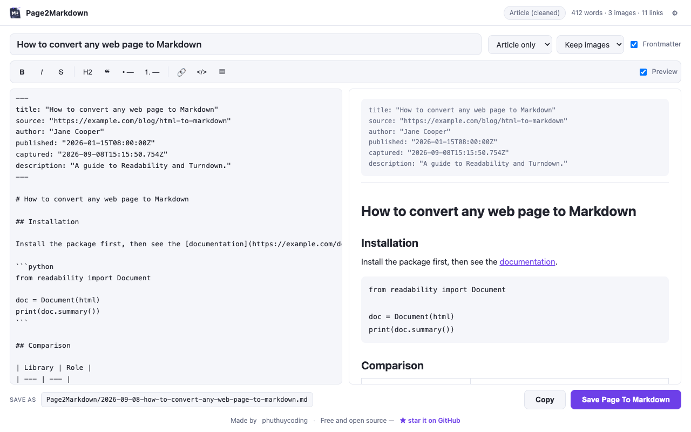
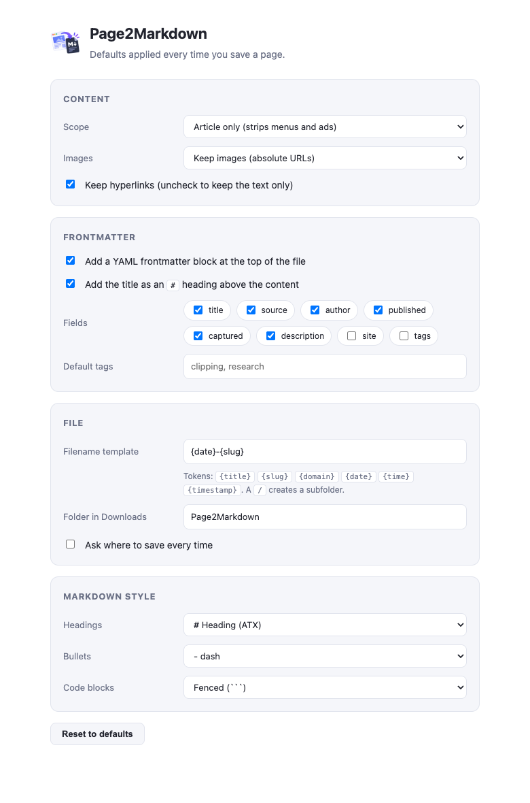

◨
The article, not the furniture
Navigation, ads, and sidebars removed by Mozilla Readability before anything is converted.
Chrome extension · Manifest V3 · MIT
A web clipper that strips the navigation, ads, and sidebars — then hands you the article with YAML frontmatter, ready to drop into Obsidian.
No server. No account. Nothing you capture leaves your computer.
Most clippers hand you a wall of text. This one keeps the structure that makes a note worth reading later.
Navigation, ads, and sidebars removed by Mozilla Readability before anything is converted.
Title, source URL, author, publication date, capture time, tags — pick which fields appear.
Fenced blocks stay fenced and keep their language tag, so highlighting still works in your editor.
GFM tables, nested lists indented to the width CommonMark actually requires, image captions.
Formatting toolbar and live preview in a full tab, so you fix things before the file hits disk.
It requests activeTab alone — no standing access to any site, nothing running in the background.
Click the toolbar icon, press CtrlShiftM, or right-click and choose Save Page To Markdown. Highlight a passage first and only that part is taken.
The editor opens in a tab beside the page. Fix the title, trim what you don't want, watch the preview update as you type.
Save the file — filename templates and destination folder are yours to set — or copy it straight into a note.

Set it once and every capture follows. Filename templates take
{title} {slug} {domain} {date}
— a / creates a subfolder.

MIT licensed, no telemetry to take on faith — the whole extension is there to read. If it saves you time, a star helps other people find it.